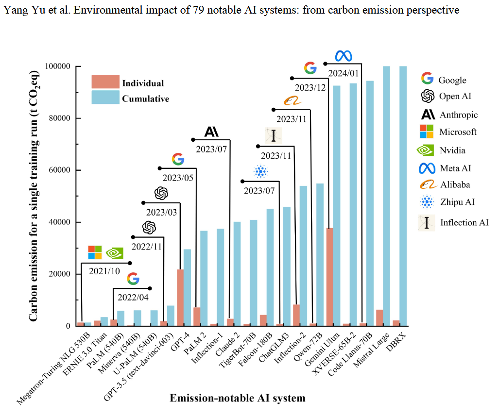

From 2022 to 2024, the emissions from 79 popular AI systems were estimated to be up to 102.6 million tonnes of CO2 equivalent per year. That is comparable to the annual emissions of almost 22 million people. It also exceeded the carbon emissions of over 137 countries in 2022 (Yu et al., 2024).
If we don’t address AI’s environmental footprint, these emissions are expected to rise substantially, which will in turn worsen the effects of climate change. That is why it is so important to propose solutions to curb AI’s contribution to climate change, especially as it becomes increasingly prevalent in our lives.
So, I write this in appeal to CEOs of AI companies everywhere, consider the following research I’ve done for creating a more sustainable future for both artificial intelligence and our planet.
The first step to making AI more sustainable comes down to power. AI data centers consume a large amount of power during initial training and ongoing inference, which often relies heavily on fossil fuels and other sources of dirty energy.
In fact, over 4% of U.S. electricity consumption is accounted for by 2,132 data centers with 56% of this energy being from fossil fuels. (Guidi et al., 2024). To reduce the carbon footprint of AI systems, companies should prioritize transitioning to renewable energy sources as well as dedicating funding for research into better alternatives.
One approach companies are taking is using nuclear power. Microsoft, for example, recently signed a deal to reopen the Three Mile Island nuclear power plant to supply energy for its expanding AI operations, eventually hoping to become carbon negative (Reuters, 2024). While there are some concerns about the long-term sustainability of nuclear power, it is undoubtedly a step in the right direction towards carbon neutrality.
So, by investing in cleaner and more efficient energy solutions — whether through wind, solar, or nuclear power — AI companies can take a major step towards reducing the environmental impact of artificial intelligence while still allowing for innovation.
The second step involves using AI itself to offset its own environmental impact. While AI contributes to carbon emissions during regular operation, it also has the potential to create solutions that will then mitigate climate change. By using AI to optimize energy grids, carbon capture, and environmental monitoring, companies can help reverse AI’s role in climate change.
For example, AI-driven energy management systems can analyze power consumption in real time and adjust energy use to reduce waste in data centers, as proved by Google’s DeepMind (Evans & Gao, 2016). AI models are also being used to enhance carbon capture by improving the accuracy of CO₂ absorption predictions and optimizing overall efficiency (Khan et al., 2025). Additionally, AI-powered environmental monitoring can track deforestation, air pollution, and other environmental indicators, helping with targeting important aspects of combatting climate change.
By using AI to help with these environmental challenges, companies can offset the emissions their AI systems generate, making it a tool for combatting climate change rather than contributing to it.
The third step is increasing the efficiency of AI systems so that training and inference use fewer resources. As discussed before, many of today’s AI models require immense computational power, leading to high energy consumption and carbon emissions. By improving model efficiency, companies can significantly reduce the environmental impact of AI without sacrificing performance.
One way to achieve this is by streamlining AI models to make them smaller and faster. For example, techniques like pruning, which removes unnecessary parts of a model, and quantization, which reduces the precision of calculations, can make models run more efficiently (Han et al., 2016). Additionally, "knowledge distillation" lets smaller models learn from larger ones, which means they can perform complex tasks without needing as many resources.
One AI model that exemplifies the potential for efficiency increases is DeepSeek, which has been shown to outperform traditional models in terms of both performance and energy consumption. DeepSeek uses clever methods such as “mixture of experts”, which splits the system into many smaller specialized “expert” systems, making it faster and requiring less computational power, which then reduces energy use (Metz, 2025). This approach has shown the potential for large-scale AI systems to be much more sustainable without sacrificing quality of results.
By working towards these innovations, companies can drastically reduce the energy consumption required for training and running models. This not only reduces emissions but also helps to improve the efficacy of AI these models, which would be advantageous for companies in such a competitive market.
In conclusion, artificial intelligence is shaping the future, but its environmental cost can’t be ignored. As AI becomes more widespread, its energy demands, and carbon emissions will only increase unless companies take action. By transitioning to cleaner energy sources, leveraging AI management, and improving the efficiency of AI models, we can create a more sustainable future.
The responsibility falls on AI companies and their leaders to implement these changes. The choice is clear: either continue down an unsustainable path or lead the charge in making AI both powerful and sustainable. The future of AI — and the world — depends on the decisions made today.
Will you be part of the problem or the solution?